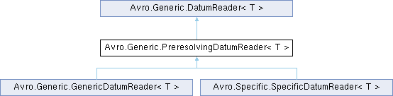

- Generated by
 1.15.0
1.15.0
|
Avro C#
|
A general purpose reader of data from avro streams. This reader analyzes and resolves the reader and writer schemas when constructed so that reads can be more efficient. Once constructed, a reader can be reused or shared among threads to avoid incurring more resolution costs. More...

Classes | |
| interface | RecordAccess |
| Defines the interface for a class that provides access to a record implementation. More... | |
| interface | EnumAccess |
| Defines the interface for a class that provides access to an enum implementation. More... | |
| interface | FixedAccess |
| Defines the interface for a class that provides access to a fixed implementation. More... | |
| interface | ArrayAccess |
| Defines the interface for a class that provides access to an array implementation. More... | |
| interface | MapAccess |
| Defines the interface for a class that provides access to a map implementation. More... | |
Public Member Functions | |||||
| T | Read (T reuse, Decoder decoder) | ||||
Read a datum. Traverse the schema, depth-first, reading all leaf values in the schema into a datum that is returned. If the provided datum is non-null it may be reused and returned.
| |||||
| object | CreateRecord (object reuse) | ||||
| Creates a new record object. Derived classes can override this to return an object of their choice. | |||||
| object | GetField (object record, string fieldName, int fieldPos) | ||||
| Used by the default implementation of ReadRecord() to get the existing field of a record object. The derived classes can override this to make their own interpretation of the record object. | |||||
| void | AddField (object record, string fieldName, int fieldPos, object fieldValue) | ||||
| Used by the default implementation of ReadRecord() to add a field to a record object. The derived classes can override this to suit their own implementation of the record object. | |||||
| object | CreateEnum (object reuse, int ordinal) | ||||
| Creates an enum value. | |||||
| object | CreateFixed (object reuse) | ||||
| Returns a fixed object. | |||||
| byte[] | GetFixedBuffer (object f) | ||||
| Returns a buffer of appropriate size to read data into. | |||||
| object | Create (object reuse) | ||||
| Creates a new array object. The initial size of the object could be anything. | |||||
| void | EnsureSize (ref object array, int targetSize) | ||||
| Hint that the array should be able to handle at least targetSize elements. The array is not required to be resized. | |||||
| void | Resize (ref object array, int targetSize) | ||||
| Resizes the array to the new value. | |||||
| void | AddElements (object array, int elements, int index, ReadItem itemReader, Decoder decoder, bool reuse) | ||||
| Adds elements to the given array by reading values from the decoder. | |||||
| object | Create (object reuse) | ||||
| Creates a new map object. | |||||
| void | AddElements (object map, int elements, ReadItem itemReader, Decoder decoder, bool reuse) | ||||
| Adds elements to the given map by reading values from the decoder. | |||||
| SchemaPair (Schema writerSchema, Schema readerSchema) | |||||
| override bool | Equals (object obj) | ||||
| override int | GetHashCode () | ||||
Protected Member Functions | |
| delegate object | ReadItem (object reuse, Decoder dec) |
| Defines the signature for a function that reads an item from a decoder. | |
| PreresolvingDatumReader (Schema writerSchema, Schema readerSchema) | |
| Initializes a new instance of the PreresolvingDatumReader<T> class. | |
| ArrayAccess | GetArrayAccess (ArraySchema readerSchema) |
| Returns an ArrayAccess implementation for the given schema. | |
| EnumAccess | GetEnumAccess (EnumSchema readerSchema) |
| Returns an EnumAccess implementation for the given schema. | |
| MapAccess | GetMapAccess (MapSchema readerSchema) |
| Returns a MapAccess implementation for the given schema. | |
| RecordAccess | GetRecordAccess (RecordSchema readerSchema) |
| Returns a RecordAccess implementation for the given schema. | |
| FixedAccess | GetFixedAccess (FixedSchema readerSchema) |
| Returns a FixedAccess implementation for the given schema. | |
| virtual bool | IsReusable (Schema.Type tag) |
| Indicates if it's possible to reuse an object of the specified type. Generally false for immutable objects like int, long, string, etc but may differ between the Specific and Generic implementations. Used to avoid retrieving the existing value if it's not reusable. | |
| bool | Equals (SchemaPair other) |
Static Protected Member Functions | |
| static Schema | FindBranch (UnionSchema us, Schema s) |
| Finds the branch of the union schema associated with the given schema. | |
Properties | |
| Schema | ReaderSchema [get] |
| Schema used to read the data. | |
| Schema | WriterSchema [get] |
| Schema that was used to write the data. | |
A general purpose reader of data from avro streams. This reader analyzes and resolves the reader and writer schemas when constructed so that reads can be more efficient. Once constructed, a reader can be reused or shared among threads to avoid incurring more resolution costs.
| void Avro.Generic.PreresolvingDatumReader< T >.AddElements | ( | object | array, |
| int | elements, | ||
| int | index, | ||
| ReadItem | itemReader, | ||
| Decoder | decoder, | ||
| bool | reuse ) |
Adds elements to the given array by reading values from the decoder.
| array | Array to add elements to. |
| elements | Number of elements to add. |
| index | Start adding elements to the array at this index. |
| itemReader | Delegate to read an item from the decoder. |
| decoder | Decoder to read from. |
| reuse | True to reuse each element in the array when deserializing. False to create a new object for each element. |
| void Avro.Generic.PreresolvingDatumReader< T >.AddElements | ( | object | map, |
| int | elements, | ||
| ReadItem | itemReader, | ||
| Decoder | decoder, | ||
| bool | reuse ) |
Adds elements to the given map by reading values from the decoder.
| map | Map to add elements to. |
| elements | Number of elements to add. |
| itemReader | Delegate to read an item from the decoder. |
| decoder | Decoder to read from. |
| reuse | True to reuse each element in the map when deserializing. False to create a new object for each element. |
| void Avro.Generic.PreresolvingDatumReader< T >.AddField | ( | object | record, |
| string | fieldName, | ||
| int | fieldPos, | ||
| object | fieldValue ) |
Used by the default implementation of ReadRecord() to add a field to a record object. The derived classes can override this to suit their own implementation of the record object.
| record | The record object to be probed into. This is guaranteed to be one that was returned by a previous call to CreateRecord. |
| fieldName | The name of the field to probe. |
| fieldPos | field number |
| fieldValue | The value to be added for the field |
| object Avro.Generic.PreresolvingDatumReader< T >.Create | ( | object | reuse | ) |
Creates a new map object.
| reuse | If appropriate, use this map object instead of creating a new one. |
| object Avro.Generic.PreresolvingDatumReader< T >.Create | ( | object | reuse | ) |
Creates a new array object. The initial size of the object could be anything.
| reuse | If appropriate use this instead of creating a new one. |
| object Avro.Generic.PreresolvingDatumReader< T >.CreateEnum | ( | object | reuse, |
| int | ordinal ) |
Creates an enum value.
| reuse | Optional object to reuse as the enum value. May be null. |
| ordinal | Ordinal value of the enum entry. |
| object Avro.Generic.PreresolvingDatumReader< T >.CreateFixed | ( | object | reuse | ) |
Returns a fixed object.
| reuse | If appropriate, uses this object instead of creating a new one. |
| object Avro.Generic.PreresolvingDatumReader< T >.CreateRecord | ( | object | reuse | ) |
Creates a new record object. Derived classes can override this to return an object of their choice.
| reuse | If appropriate, will reuse this object instead of constructing a new one |
| void Avro.Generic.PreresolvingDatumReader< T >.EnsureSize | ( | ref object | array, |
| int | targetSize ) |
Hint that the array should be able to handle at least targetSize elements. The array is not required to be resized.
| array | Array object who needs to support targetSize elements. This is guaranteed to be something returned by a previous call to CreateArray(). |
| targetSize | The new size. |
|
inlinestaticprotected |
|
abstractprotected |
Returns an ArrayAccess implementation for the given schema.
| readerSchema | Schema for the array. |
|
abstractprotected |
Returns an EnumAccess implementation for the given schema.
| readerSchema | Schema for the enum. |
| object Avro.Generic.PreresolvingDatumReader< T >.GetField | ( | object | record, |
| string | fieldName, | ||
| int | fieldPos ) |
Used by the default implementation of ReadRecord() to get the existing field of a record object. The derived classes can override this to make their own interpretation of the record object.
| record | The record object to be probed into. This is guaranteed to be one that was returned by a previous call to CreateRecord. |
| fieldName | The name of the field to probe. |
| fieldPos | field number |
|
abstractprotected |
Returns a FixedAccess implementation for the given schema.
| readerSchema | Schema for the fixed. |
| byte[] Avro.Generic.PreresolvingDatumReader< T >.GetFixedBuffer | ( | object | f | ) |
Returns a buffer of appropriate size to read data into.
| f | The fixed object. It is guaranteed that this is something that has been previously returned by CreateFixed |
|
abstractprotected |
Returns a RecordAccess implementation for the given schema.
| readerSchema | Schema for the record. |
|
inlineprotectedvirtual |
Indicates if it's possible to reuse an object of the specified type. Generally false for immutable objects like int, long, string, etc but may differ between the Specific and Generic implementations. Used to avoid retrieving the existing value if it's not reusable.
| tag | Schema type to test for reusability. |
Reimplemented in Avro.Generic.GenericDatumReader< T >, and Avro.Specific.SpecificDatumReader< T >.
|
inlineprotected |
Initializes a new instance of the PreresolvingDatumReader<T> class.
|
inline |
Read a datum. Traverse the schema, depth-first, reading all leaf values in the schema into a datum that is returned. If the provided datum is non-null it may be reused and returned.
| reuse | Optional object to deserialize the datum into. May be null. |
| decoder | Decoder to read data from. |
Implements Avro.Generic.DatumReader< T >.
|
protected |
Defines the signature for a function that reads an item from a decoder.
| reuse | Optional object to deserialize the datum into. May be null. |
| dec | Decoder to read data from. |
| void Avro.Generic.PreresolvingDatumReader< T >.Resize | ( | ref object | array, |
| int | targetSize ) |
Resizes the array to the new value.
| array | Array object whose size is required. This is guaranteed to be something returned by a previous call to CreateArray(). |
| targetSize | The new size. |
|
get |
Schema used to read the data.
Implements Avro.Generic.DatumReader< T >.
|
get |
Schema that was used to write the data.
Implements Avro.Generic.DatumReader< T >.